2.7. Mathematical optimization: finding minima of functions¶
Authors: Gaël Varoquaux
Mathematical optimization deals with the problem of finding numerically minimums (or maximums or zeros) of a function. In this context, the function is called cost function, or objective function, or energy.
Here, we are interested in using scipy.optimize for black-box
optimization: we do not rely on the mathematical expression of the
function that we are optimizing. Note that this expression can often be
used for more efficient, non black-box, optimization.
Prerequisites
See also
References
Mathematical optimization is very … mathematical. If you want performance, it really pays to read the books:
- Convex Optimization by Boyd and Vandenberghe (pdf available free online).
- Numerical Optimization, by Nocedal and Wright. Detailed reference on gradient descent methods.
- Practical Methods of Optimization by Fletcher: good at hand-waving explanations.
Chapters contents
- Knowing your problem
- A review of the different optimizers
- Full code examples
- Examples for the mathematical optimization chapter
- Practical guide to optimization with scipy
- Special case: non-linear least-squares
- Optimization with constraints
- Full code examples
- Examples for the mathematical optimization chapter
2.7.1. Knowing your problem¶
Not all optimization problems are equal. Knowing your problem enables you to choose the right tool.
Dimensionality of the problem
The scale of an optimization problem is pretty much set by the dimensionality of the problem, i.e. the number of scalar variables on which the search is performed.
2.7.1.1. Convex versus non-convex optimization¶
 |
 |
A convex function:
|
A non-convex function |
Optimizing convex functions is easy. Optimizing non-convex functions can be very hard.
Note
It can be proven that for a convex function a local minimum is also a global minimum. Then, in some sense, the minimum is unique.
2.7.1.2. Smooth and non-smooth problems¶
 |
 |
A smooth function: The gradient is defined everywhere, and is a continuous function |
A non-smooth function |
Optimizing smooth functions is easier (true in the context of black-box optimization, otherwise Linear Programming is an example of methods which deal very efficiently with piece-wise linear functions).
2.7.1.3. Noisy versus exact cost functions¶
| Noisy (blue) and non-noisy (green) functions | 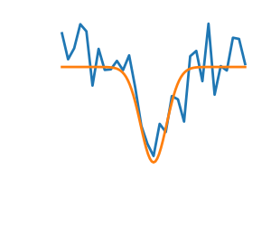 |
Noisy gradients
Many optimization methods rely on gradients of the objective function. If the gradient function is not given, they are computed numerically, which induces errors. In such situation, even if the objective function is not noisy, a gradient-based optimization may be a noisy optimization.
2.7.1.4. Constraints¶
Optimizations under constraints Here:
|
 |


2.7.2. A review of the different optimizers¶
2.7.2.1. Getting started: 1D optimization¶
Let’s get started by finding the minimum of the scalar function
![f(x)=\exp[(x-0.7)^2]](../../_images/math/c8b2b4fa34dbb68f7c75a530d0fc24e3c4a6c6f1.png) .
. scipy.optimize.minimize_scalar() uses
Brent’s method to find the minimum of a function:
>>> from scipy import optimize
>>> def f(x):
... return -np.exp(-(x - 0.7)**2)
>>> result = optimize.minimize_scalar(f)
>>> result.success # check if solver was successful
True
>>> x_min = result.x
>>> x_min
0.699999999...
>>> x_min - 0.7
-2.16...e-10
| Brent’s method on a quadratic function: it converges in 3 iterations, as the quadratic approximation is then exact. |  |
 |
| Brent’s method on a non-convex function: note that the fact that the optimizer avoided the local minimum is a matter of luck. |  |
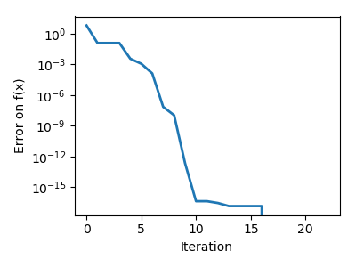 |
Note
You can use different solvers using the parameter method.
Note
scipy.optimize.minimize_scalar() can also be used for optimization
constrained to an interval using the parameter bounds.
2.7.2.2. Gradient based methods¶
Some intuitions about gradient descent¶
Here we focus on intuitions, not code. Code will follow.
Gradient descent basically consists in taking small steps in the direction of the gradient, that is the direction of the steepest descent.
| A well-conditioned quadratic function. |  |
 |
An ill-conditioned quadratic function. The core problem of gradient-methods on ill-conditioned problems is that the gradient tends not to point in the direction of the minimum. |
 |
 |
We can see that very anisotropic (ill-conditioned) functions are harder to optimize.
Take home message: conditioning number and preconditioning
If you know natural scaling for your variables, prescale them so that they behave similarly. This is related to preconditioning.
Also, it clearly can be advantageous to take bigger steps. This is done in gradient descent code using a line search.
| A well-conditioned quadratic function. | 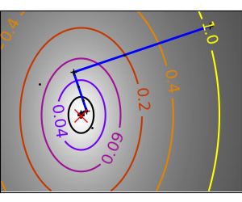 |  |
| An ill-conditioned quadratic function. | 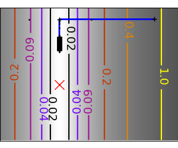 |  |
| An ill-conditioned non-quadratic function. | 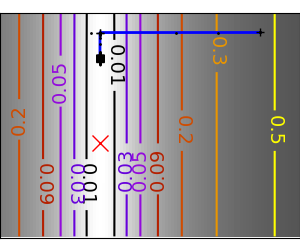 |  |
| An ill-conditioned very non-quadratic function. |  |
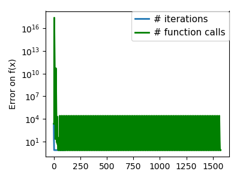 |
The more a function looks like a quadratic function (elliptic iso-curves), the easier it is to optimize.
Conjugate gradient descent¶
The gradient descent algorithms above are toys not to be used on real problems.
As can be seen from the above experiments, one of the problems of the simple gradient descent algorithms, is that it tends to oscillate across a valley, each time following the direction of the gradient, that makes it cross the valley. The conjugate gradient solves this problem by adding a friction term: each step depends on the two last values of the gradient and sharp turns are reduced.
| An ill-conditioned non-quadratic function. | 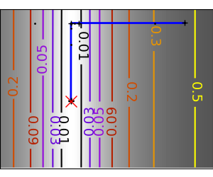 |  |
| An ill-conditioned very non-quadratic function. | 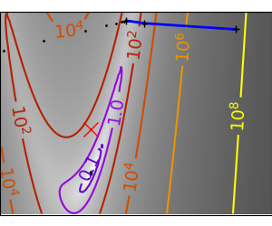 | 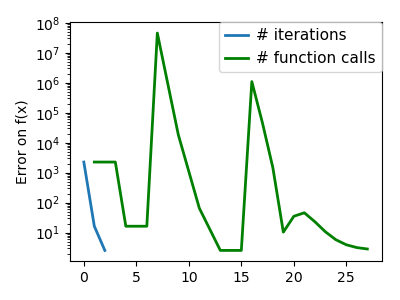 |
scipy provides scipy.optimize.minimize() to find the minimum of scalar
functions of one or more variables. The simple conjugate gradient method can
be used by setting the parameter method to CG
>>> def f(x): # The rosenbrock function
... return .5*(1 - x[0])**2 + (x[1] - x[0]**2)**2
>>> optimize.minimize(f, [2, -1], method="CG")
fun: 1.6...e-11
jac: array([-6.15...e-06, 2.53...e-07])
message: ...'Optimization terminated successfully.'
nfev: 108
nit: 13
njev: 27
status: 0
success: True
x: array([0.99999..., 0.99998...])
Gradient methods need the Jacobian (gradient) of the function. They can compute it numerically, but will perform better if you can pass them the gradient:
>>> def jacobian(x):
... return np.array((-2*.5*(1 - x[0]) - 4*x[0]*(x[1] - x[0]**2), 2*(x[1] - x[0]**2)))
>>> optimize.minimize(f, [2, 1], method="CG", jac=jacobian)
fun: 2.957...e-14
jac: array([ 7.1825...e-07, -2.9903...e-07])
message: 'Optimization terminated successfully.'
nfev: 16
nit: 8
njev: 16
status: 0
success: True
x: array([1.0000..., 1.0000...])
Note that the function has only been evaluated 27 times, compared to 108 without the gradient.
2.7.2.3. Newton and quasi-newton methods¶
Newton methods: using the Hessian (2nd differential)¶
Newton methods use a local quadratic approximation to compute the jump direction. For this purpose, they rely on the 2 first derivative of the function: the gradient and the Hessian.
An ill-conditioned quadratic function: Note that, as the quadratic approximation is exact, the Newton method is blazing fast |
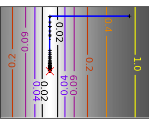 | 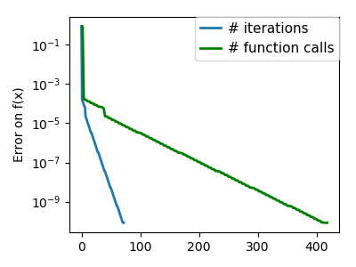 |
An ill-conditioned non-quadratic function: Here we are optimizing a Gaussian, which is always below its quadratic approximation. As a result, the Newton method overshoots and leads to oscillations. |
 |
 |
| An ill-conditioned very non-quadratic function: |  |
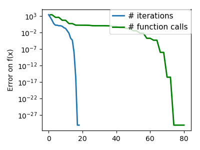 |
In scipy, you can use the Newton method by setting method to Newton-CG in
scipy.optimize.minimize(). Here, CG refers to the fact that an internal
inversion of the Hessian is performed by conjugate gradient
>>> def f(x): # The rosenbrock function
... return .5*(1 - x[0])**2 + (x[1] - x[0]**2)**2
>>> def jacobian(x):
... return np.array((-2*.5*(1 - x[0]) - 4*x[0]*(x[1] - x[0]**2), 2*(x[1] - x[0]**2)))
>>> optimize.minimize(f, [2,-1], method="Newton-CG", jac=jacobian)
fun: 1.5...e-15
jac: array([ 1.0575...e-07, -7.4832...e-08])
message: ...'Optimization terminated successfully.'
nfev: 11
nhev: 0
nit: 10
njev: 52
status: 0
success: True
x: array([0.99999..., 0.99999...])
Note that compared to a conjugate gradient (above), Newton’s method has required less function evaluations, but more gradient evaluations, as it uses it to approximate the Hessian. Let’s compute the Hessian and pass it to the algorithm:
>>> def hessian(x): # Computed with sympy
... return np.array(((1 - 4*x[1] + 12*x[0]**2, -4*x[0]), (-4*x[0], 2)))
>>> optimize.minimize(f, [2,-1], method="Newton-CG", jac=jacobian, hess=hessian)
fun: 1.6277...e-15
jac: array([ 1.1104...e-07, -7.7809...e-08])
message: ...'Optimization terminated successfully.'
nfev: 11
nhev: 10
nit: 10
njev: 20
status: 0
success: True
x: array([0.99999..., 0.99999...])
Note
At very high-dimension, the inversion of the Hessian can be costly and unstable (large scale > 250).
Note
Newton optimizers should not to be confused with Newton’s root finding
method, based on the same principles, scipy.optimize.newton().
Quasi-Newton methods: approximating the Hessian on the fly¶
BFGS: BFGS (Broyden-Fletcher-Goldfarb-Shanno algorithm) refines at each step an approximation of the Hessian.
2.7.4. Examples for the mathematical optimization chapter¶


{kind=link}
{kind=link}
{kind=link}
{kind=link}
{kind=link}
{kind=link}
{kind=link}
{kind=link}
{kind=link}
{kind=link}
{kind=link}
Gallery generated by Sphinx-Gallery
An ill-conditioned quadratic function: On a exactly quadratic function, BFGS is not as fast as Newton’s method, but still very fast. |
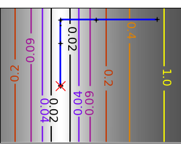 |  |
An ill-conditioned non-quadratic function: Here BFGS does better than Newton, as its empirical estimate of the curvature is better than that given by the Hessian. |
 |
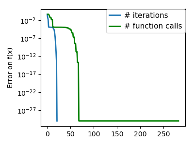 |
| An ill-conditioned very non-quadratic function: |  |
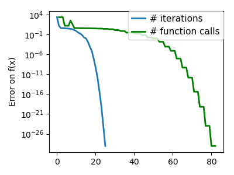 |
{kind=link}
{kind=link}
{kind=link}
>>> def f(x): # The rosenbrock function
... return .5*(1 - x[0])**2 + (x[1] - x[0]**2)**2
>>> def jacobian(x):
... return np.array((-2*.5*(1 - x[0]) - 4*x[0]*(x[1] - x[0]**2), 2*(x[1] - x[0]**2)))
>>> optimize.minimize(f, [2, -1], method="BFGS", jac=jacobian)
fun: 2.6306...e-16
hess_inv: array([[0.99986..., 2.0000...],
[2.0000..., 4.498...]])
jac: array([ 6.7089...e-08, -3.2222...e-08])
message: ...'Optimization terminated successfully.'
nfev: 10
nit: 8
njev: 10
status: 0
success: True
x: array([1. , 0.99999...])
L-BFGS: Limited-memory BFGS Sits between BFGS and conjugate gradient: in very high dimensions (> 250) the Hessian matrix is too costly to compute and invert. L-BFGS keeps a low-rank version. In addition, box bounds are also supported by L-BFGS-B:
>>> def f(x): # The rosenbrock function
... return .5*(1 - x[0])**2 + (x[1] - x[0]**2)**2
>>> def jacobian(x):
... return np.array((-2*.5*(1 - x[0]) - 4*x[0]*(x[1] - x[0]**2), 2*(x[1] - x[0]**2)))
>>> optimize.minimize(f, [2, 2], method="L-BFGS-B", jac=jacobian)
fun: 1.4417...e-15
hess_inv: <2x2 LbfgsInvHessProduct with dtype=float64>
jac: array([ 1.0233...e-07, -2.5929...e-08])
message: ...'CONVERGENCE: NORM_OF_PROJECTED_GRADIENT_<=_PGTOL'
nfev: 17
nit: 16
status: 0
success: True
x: array([1.0000..., 1.0000...])
2.7.4.12. Gradient-less methods¶
A shooting method: the Powell algorithm¶
Almost a gradient approach
An ill-conditioned quadratic function: Powell’s method isn’t too sensitive to local ill-conditionning in low dimensions |
 |
 |
| An ill-conditioned very non-quadratic function: | 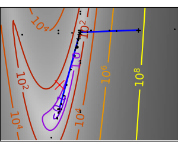 | 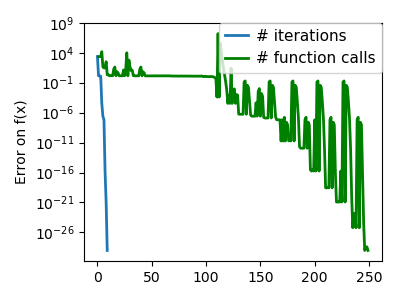 |
{kind=link}
{kind=link}
Simplex method: the Nelder-Mead¶
The Nelder-Mead algorithms is a generalization of dichotomy approaches to high-dimensional spaces. The algorithm works by refining a simplex, the generalization of intervals and triangles to high-dimensional spaces, to bracket the minimum.
Strong points: it is robust to noise, as it does not rely on computing gradients. Thus it can work on functions that are not locally smooth such as experimental data points, as long as they display a large-scale bell-shape behavior. However it is slower than gradient-based methods on smooth, non-noisy functions.
| An ill-conditioned non-quadratic function: |  |
 |
| An ill-conditioned very non-quadratic function: | 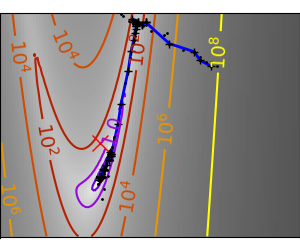 | 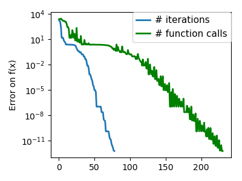 |
{kind=link}
{kind=link}
Using the Nelder-Mead solver in scipy.optimize.minimize():
>>> def f(x): # The rosenbrock function
... return .5*(1 - x[0])**2 + (x[1] - x[0]**2)**2
>>> optimize.minimize(f, [2, -1], method="Nelder-Mead")
final_simplex: (array([[1.0000..., 1.0000...],
[0.99998... , 0.99996... ],
[1.0000..., 1.0000... ]]), array([1.1152...e-10, 1.5367...e-10, 4.9883...e-10]))
fun: 1.1152...e-10
message: ...'Optimization terminated successfully.'
nfev: 111
nit: 58
status: 0
success: True
x: array([1.0000..., 1.0000...])
2.7.4.13. Global optimizers¶
If your problem does not admit a unique local minimum (which can be hard to test unless the function is convex), and you do not have prior information to initialize the optimization close to the solution, you may need a global optimizer.
Brute force: a grid search¶
scipy.optimize.brute() evaluates the function on a given grid of
parameters and returns the parameters corresponding to the minimum
value. The parameters are specified with ranges given to
numpy.mgrid. By default, 20 steps are taken in each direction:
>>> def f(x): # The rosenbrock function
... return .5*(1 - x[0])**2 + (x[1] - x[0]**2)**2
>>> optimize.brute(f, ((-1, 2), (-1, 2)))
array([1.0000..., 1.0000...])
2.7.5. Practical guide to optimization with scipy¶
2.7.5.1. Choosing a method¶
All methods are exposed as the method argument of
scipy.optimize.minimize().

| Without knowledge of the gradient: | |
|---|---|
|
|
| With knowledge of the gradient: | |
|
|
| With the Hessian: | |
|
|
| If you have noisy measurements: | |
|
|
2.7.5.2. Making your optimizer faster¶
- Choose the right method (see above), do compute analytically the gradient and Hessian, if you can.
- Use preconditionning when possible.
- Choose your initialization points wisely. For instance, if you are running many similar optimizations, warm-restart one with the results of another.
- Relax the tolerance if you don’t need precision using the parameter
tol.
2.7.5.3. Computing gradients¶
Computing gradients, and even more Hessians, is very tedious but worth the effort. Symbolic computation with Sympy may come in handy.
Warning
A very common source of optimization not converging well is human
error in the computation of the gradient. You can use
scipy.optimize.check_grad() to check that your gradient is
correct. It returns the norm of the different between the gradient
given, and a gradient computed numerically:
>>> optimize.check_grad(f, jacobian, [2, -1])
2.384185791015625e-07
See also scipy.optimize.approx_fprime() to find your errors.
2.7.5.4. Synthetic exercices¶
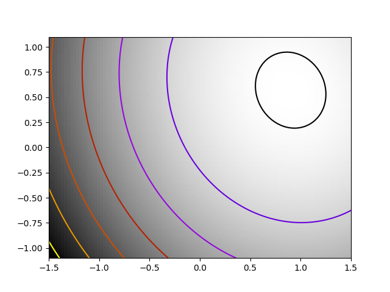Exercice: A simple (?) quadratic function
Optimize the following function, using K[0] as a starting point:
np.random.seed(0)
K = np.random.normal(size=(100, 100))
def f(x):
return np.sum((np.dot(K, x - 1))**2) + np.sum(x**2)**2
Time your approach. Find the fastest approach. Why is BFGS not working well?
2.7.6. Special case: non-linear least-squares¶
2.7.6.1. Minimizing the norm of a vector function¶
Least square problems, minimizing the norm of a vector function, have a
specific structure that can be used in the Levenberg–Marquardt algorithm
implemented in scipy.optimize.leastsq().
Lets try to minimize the norm of the following vectorial function:
>>> def f(x):
... return np.arctan(x) - np.arctan(np.linspace(0, 1, len(x)))
>>> x0 = np.zeros(10)
>>> optimize.leastsq(f, x0)
(array([0. , 0.11111111, 0.22222222, 0.33333333, 0.44444444,
0.55555556, 0.66666667, 0.77777778, 0.88888889, 1. ]), 2)
This took 67 function evaluations (check it with ‘full_output=1’). What if we compute the norm ourselves and use a good generic optimizer (BFGS):
>>> def g(x):
... return np.sum(f(x)**2)
>>> optimize.minimize(g, x0, method="BFGS")
fun: 2.6940...e-11
hess_inv: array([[...
...
...]])
jac: array([...
...
...])
message: ...'Optimization terminated successfully.'
nfev: 144
nit: 11
njev: 12
status: 0
success: True
x: array([-7.3...e-09, 1.1111...e-01, 2.2222...e-01, 3.3333...e-01,
4.4444...e-01, 5.5555...e-01, 6.6666...e-01, 7.7777...e-01,
8.8889...e-01, 1.0000...e+00])
BFGS needs more function calls, and gives a less precise result.
Note
leastsq is interesting compared to BFGS only if the dimensionality of the output vector is large, and larger than the number of parameters to optimize.
Warning
If the function is linear, this is a linear-algebra problem, and
should be solved with scipy.linalg.lstsq().
2.7.6.2. Curve fitting¶
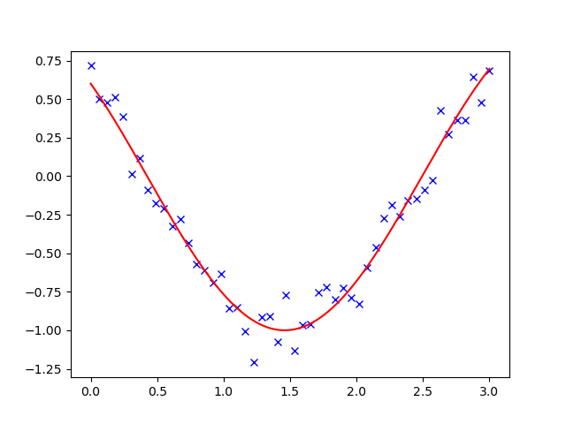Least square problems occur often when fitting a non-linear to data.
While it is possible to construct our optimization problem ourselves,
scipy provides a helper function for this purpose:
scipy.optimize.curve_fit():
>>> def f(t, omega, phi):
... return np.cos(omega * t + phi)
>>> x = np.linspace(0, 3, 50)
>>> y = f(x, 1.5, 1) + .1*np.random.normal(size=50)
>>> optimize.curve_fit(f, x, y)
(array([1.5185..., 0.92665...]), array([[ 0.00037..., -0.00056...],
[-0.0005..., 0.00123...]]))
Exercise
Do the same with omega = 3. What is the difficulty?
2.7.7. Optimization with constraints¶
2.7.7.1. Box bounds¶
Box bounds correspond to limiting each of the individual parameters of
the optimization. Note that some problems that are not originally written
as box bounds can be rewritten as such via change of variables. Both
scipy.optimize.minimize_scalar() and scipy.optimize.minimize()
support bound constraints with the parameter bounds:
>>> def f(x):
... return np.sqrt((x[0] - 3)**2 + (x[1] - 2)**2)
>>> optimize.minimize(f, np.array([0, 0]), bounds=((-1.5, 1.5), (-1.5, 1.5)))
fun: 1.5811...
hess_inv: <2x2 LbfgsInvHessProduct with dtype=float64>
jac: array([-0.94868..., -0.31622...])
message: ...'CONVERGENCE: NORM_OF_PROJECTED_GRADIENT_<=_PGTOL'
nfev: 9
nit: 2
status: 0
success: True
x: array([1.5, 1.5])

2.7.7.2. General constraints¶
Equality and inequality constraints specified as functions:  and
and  .
.
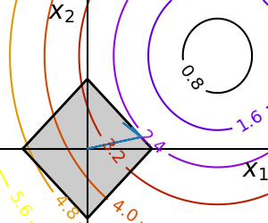scipy.optimize.fmin_slsqp()Sequential least square programming: equality and inequality constraints:>>> def f(x): ... return np.sqrt((x[0] - 3)**2 + (x[1] - 2)**2) >>> def constraint(x): ... return np.atleast_1d(1.5 - np.sum(np.abs(x))) >>> x0 = np.array([0, 0]) >>> optimize.minimize(f, x0, constraints={"fun": constraint, "type": "ineq"}) fun: 2.4748... jac: array([-0.70708..., -0.70712...]) message: ...'Optimization terminated successfully.' nfev: 20 nit: 5 njev: 5 status: 0 success: True x: array([1.2500..., 0.2499...])
Warning
The above problem is known as the Lasso problem in statistics, and there exist very efficient solvers for it (for instance in scikit-learn). In general do not use generic solvers when specific ones exist.
Lagrange multipliers
If you are ready to do a bit of math, many constrained optimization problems can be converted to non-constrained optimization problems using a mathematical trick known as Lagrange multipliers.